Bellman-Ford והפרשי אילוצים
⏱ זמן משוער: 60 דק'
0. האינטואיציה — למה צריך את Bellman-Ford?
למדנו את Dijkstra לבעיית SSSP — מציאת מסלולים קצרים ביותר ממקור יחיד s לכל שאר הקדקודים. אבל ל-Dijkstra יש מגבלה מהותית: הוא מניח שכל המשקלים אי-שליליים (w: E → ℝ⁺). ברגע שיש קשת במשקל שלילי, הגישה החמדנית שלו — "לסגור" קדקוד ברגע שמחלצים אותו מהמינימום — נשברת, כי קשת שלילית מאוחרת עלולה לשפר מסלול שכבר "נסגר".
Bellman-Ford פותר בדיוק את הבעיה הזו. הסיסמה בשקף הפתיחה של המרצה: "Can also deal with negative weights! … At extra cost." כלומר — הוא יודע להתמודד גם עם משקלים שליליים, במחיר זמן ריצה גבוה יותר. ומעבר לכך, הוא יודע לזהות מצב שבו הבעיה כלל לא מוגדרת: כשקיים מעגל שלילי הנגיש מהמקור, אין "מסלול קצר ביותר" — אפשר להקיף את המעגל שוב ושוב ולהקטין את המשקל עד −∞.
הרעיון המרכזי פשוט להפליא: במקום סדר חמדני מתוחכם, Bellman-Ford פשוט מבצע relaxation על כל הקשתות, שוב ושוב, ב-סבבים. אחרי מספיק סבבים כל אומדני המרחק d[v] מתייצבים על הערך הנכון. וכמה זה "מספיק סבבים"? זו בדיוק השאלה שהוכחת הנכונות עונה עליה.
מקור: shortest-paths-bellman-ford.pdf (עמ' 1), lec-bellman-ford-difference-constraints.pdf (עמ' 3)
1. הגדרות ומושגים
נסכם את הסימונים שנשתמש בהם לאורך כל האשכול (כפי שהופיעו בשקפי המרצה):
| סימון | משמעות |
|---|---|
| G = (V, E) | גרף מכוון וממושקל (weighted digraph) עם פונקציית משקל w: E → ℝ — משקלים ממשיים, כולל שליליים. |
| s | קדקוד המקור (source). |
| d[v] | האומדן שהאלגוריתם מחזיק עבור המרחק מ-s ל-v; חסם עליון המתעדכן כלפי מטה. |
| δ(s, v) | משקל המסלול הקצר ביותר מ-s ל-v (הערך האמיתי; −∞ אם עוברים דרך מעגל שלילי). |
| π[v] | הקדקוד הקודם ל-v על המסלול; שרשור ה-π משחזר את המסלול עצמו. |
| intermediate vertices | קדקודי-הביניים במסלול — כל הקדקודים פרט ל-s ול-v עצמם. |
פעולת היסוד של כל אלגוריתמי המסלולים הקצרים היא ה-relaxation (הקלה) של קשת (u, v): אם דרך u מגיעים ל-v בזול יותר ממה שידוע כרגע — מעדכנים. כלומר, אם d[u] + w(u,v) < d[v] אז d[v] ← d[u] + w(u,v) ו-π[v] ← u. לפני הכול מבצעים Initialize-Single-Source: d[s]=0, d[v]=∞ לכל v≠s, π[v]=NIL.
מקור: shortest-paths-bellman-ford.pdf (עמ' 3), הגדרת RELAX מהרצאת Dijkstra
2. האלגוריתם — הפסאודו-קוד
הנה הפסאודו-קוד המלא של Bellman-Ford, בדיוק כפי שהופיע בשקפי התרגול (בסימון CLRS של המרצה):
Bellman-Ford (G, w, s) 1. Initialize-Single-Source(G,s) 2. for i←1 to |V[G]| - 1 3. do for each edge (u,v) ∈ E[G] 4. do Relax(u,v,w) 5. for each edge (u,v) ∈ E[G] 6. do if d[v] > d[u] + w(u,v) 7. then return False 8. return answer
2.1 קריאה שורה-אחר-שורה
- שורה 1 — Initialize-Single-Source(G,s): אתחול d[s]=0, d[v]=∞ לכל השאר, π[v]=NIL.
- שורות 2–4 — הלב: לולאה חיצונית שרצה |V|−1 פעמים (סבבים). בכל סבב עוברים על כל הקשתות (u,v) ומבצעים Relax(u,v,w) על כל אחת. שימו לב: אין כאן שום סדר חכם — פשוט "הכול, שוב ושוב".
- שורות 5–7 — בדיקת המעגל השלילי: מעבר נוסף (הסבב ה-|V|) על כל הקשתות. אם עדיין קיימת קשת שאפשר להקל עליה — d[v] > d[u] + w(u,v) — אז המרחקים "לא התייצבו" גם אחרי |V|−1 סבבים, וזו עדות ודאית ל-מעגל שלילי → מחזירים False.
- שורה 8 — אם לא נמצאה שום קשת להקלה, מחזירים answer (כלומר True) — וערכי d[v] הם המרחקים הנכונים δ(s,v).
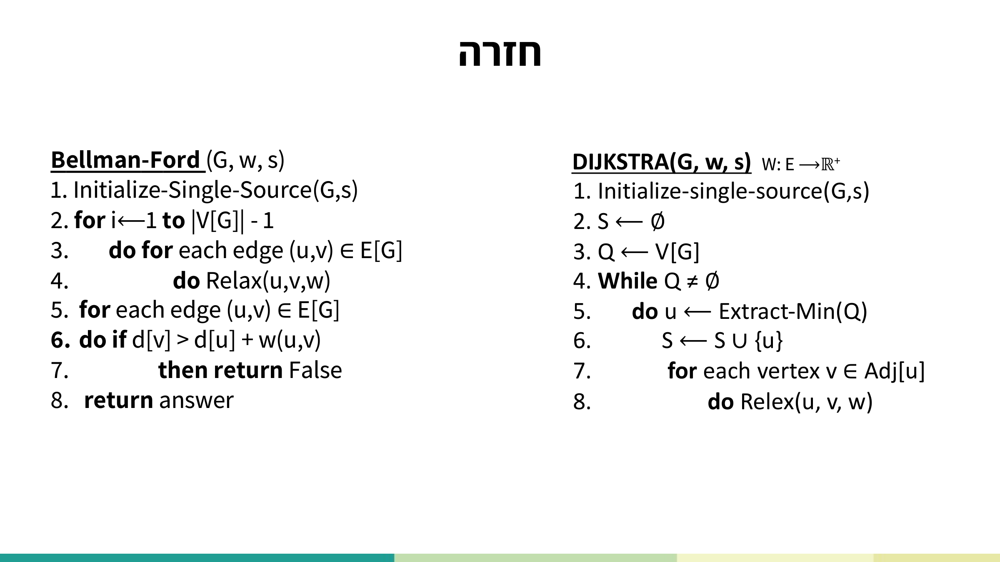
2.2 יתרונות וחסרונות (לפי המרצה)
- יתרונות: עובד גם על משקלים שליליים; יודע לאתר מעגלים שליליים בגרף.
- חסרונות: זמן ריצה ארוך יותר מ-Dijkstra.
מקור: lec-bellman-ford-difference-constraints.pdf (עמ' 2–4)
3. דוגמת הגרף מההרצאה — S, A, B, C
בשקף התרגול הופיעה דוגמת גרף מכוון בן 4 קדקודים S, A, B, C, עם קשת שלילית אחת — מה שהופך אותו למועמד מושלם ל-Bellman-Ford (ולא ל-Dijkstra). זהו המבנה:
- S → A במשקל 1
- S → C במשקל 2
- A → B במשקל 2
- B → C במשקל 1
- C → A במשקל −4 (הקשת השלילית)
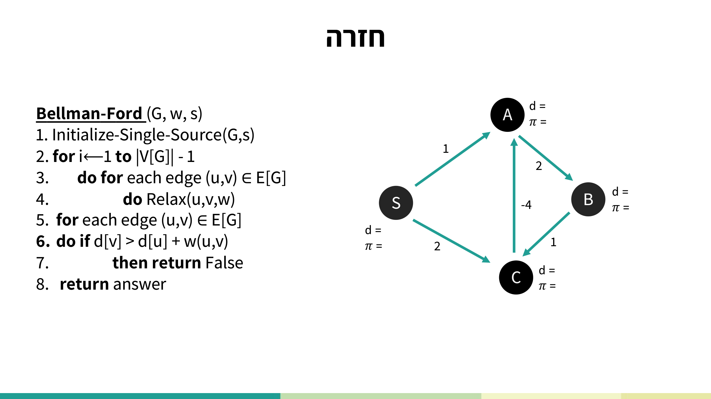
שימו לב: יש כאן מעגל A → B → C → A שמשקלו 2 + 1 + (−4) = −1 — מעגל שלילי! לכן על הגרף הזה Bellman-Ford יזהה בסבב הבדיקה שאפשר עוד להקל, ויחזיר False.
אתחול: d[S]=0, d[A]=∞, d[B]=∞, d[C]=∞.
סבב 1: (S,A): d[A]=1; (S,C): d[C]=2; (A,B): d[B]=1+2=3; (B,C): 3+1=4 > 2 ללא שינוי; (C,A): 2+(−4)=−2 < 1 → d[A]=−2.
סבב 2: (A,B): −2+2=0 < 3 → d[B]=0; (B,C): 0+1=1 < 2 → d[C]=1; (C,A): 1+(−4)=−3 < −2 → d[A]=−3.
סבב 3: שוב d[A] יורד ל-−4, וכן הלאה — הערכים ממשיכים לרדת ולא מתייצבים. זו בדיוק ההתנהגות של מעגל שלילי.
סבב הבדיקה (שורות 5–7): עדיין קיימת קשת שאפשר להקל עליה (למשל (C,A)) → האלגוריתם מחזיר False: אין מסלול קצר ביותר מוגדר, כי δ(s,A)=δ(s,B)=δ(s,C)=−∞.
מקור: lec-bellman-ford-difference-constraints.pdf (עמ' 4)
4. ניתוח עלות (Cost)
עלות האלגוריתם נובעת ישירות ממבנה הלולאות. המרצה פירטה בטבלה את העלות לפי מספרי השורות:
| שורות | עלות | הסבר |
|---|---|---|
| 1 | Θ(|V|) | אתחול כל הקדקודים. |
| 2–4 | Θ(|V| · |E|) | |V|−1 סבבים × |E| קשתות בכל סבב. |
| 5–7 | O(|E|) | מעבר בדיקה יחיד על כל הקשתות. |
| 8 | Θ(1) | החזרת התשובה. |
| סה"כ | Θ(|V| · |E|) | הרכיב הדומיננטי הוא הלולאה הכפולה בשורות 2–4. |
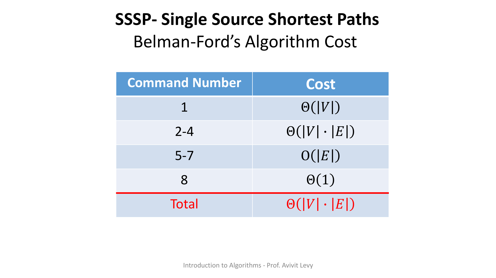
מקור: shortest-paths-bellman-ford.pdf (עמ' 2)
5. נכונות האלגוריתם (Correctness)
הנכונות בנויה משני חלקים: Claim (טענת ביניים על מה שקורה אחרי כל סבב), ואז Conclusion (המסקנה על התוצאה הסופית). נביא את הניסוחים המדויקים כפי שהופיעו בשקפים.
5.1 ה-Claim — מה מובטח אחרי הסבב ה-i
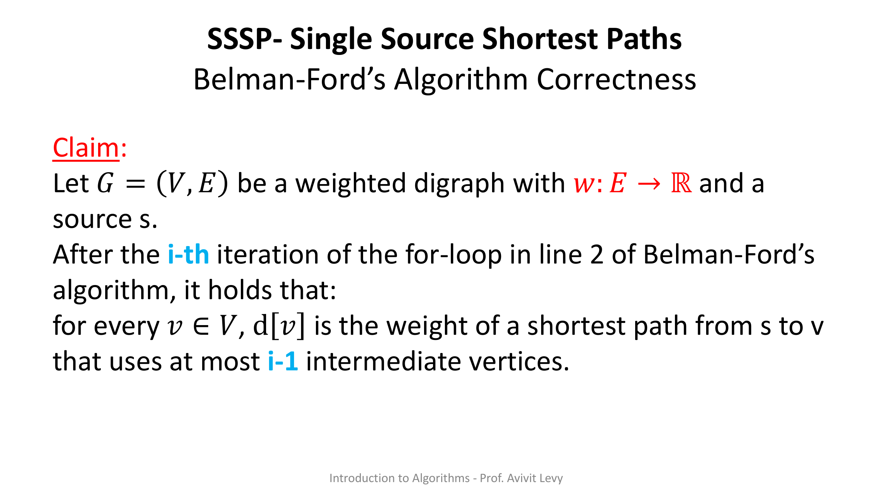
5.2 הוכחת ה-Claim — באינדוקציה על i
בסיס האינדוקציה (i = 1):
כאן i−1 = 0, כלומר לא מותרים קדקודי-ביניים כלל. אכן, בביצוע RELAX על כל הקשתות בסבב הראשון, משתפרים רק ערכי d[v] של קדקודים v שהם שכנים ישירים של s (קשת ישירה s → v). זהו בדיוק "מסלול עם 0 קדקודי-ביניים".
צעד האינדוקציה (מ-i ל-i+1):
נניח שהטענה נכונה עבור 1 ≤ i < |V|−1. יהי v ∈ V קדקוד שעבורו קיים מסלול קצר ביותר מ-s ל-v המשתמש ב-i קדקודי-ביניים. יהי u הקדקוד האחרון במסלול לפני v. אם נסמן ב-p` את המקטע s ⇝ u, אז המסלול הוא s ⇝(p`) u → v.
מהנחת האינדוקציה, אחרי הסבב ה-i מתקיים d[u] = w(p`). מכיוון שבסבב ה-i+1 מבוצע RELAX על כל הקשתות — כולל הקריאה RELAX(u, v, w) — הטענה נובעת מ-property 3 of the RELAX procedure (ההקלה על הקשת האחרונה נועלת את הערך הנכון ב-d[v]). מש"ל.
5.3 ה-Conclusion — התוצאה הסופית (iff)
צריך להראות את שני הכיוונים של ה-iff:
כיוון 1 — נניח שהאלגוריתם החזיר TRUE:
אזי אף אחת מהבדיקות בשורות 5–7 לא זיהתה מסלול משופר. מכיוון שמסלולים משופרים כאלה הם בהכרח מעגליים (why? — מסלול פשוט כבר נתפס ב-|V|−1 הסבבים), מסיקים שאין בגרף מעגל שלילי. לכן כל המסלולים הקצרים הם מסלולים פשוטים, ומספר קדקודי-הביניים בהם הוא לכל היותר |V|−2 — ולכן |V|−1 סבבים מספיקים כדי לחשב את כולם נכון, לפי ה-Claim.
כיוון 2 — נניח שהאלגוריתם לא החזיר TRUE:
אזי הוא החזיר False באחת הבדיקות בשורות 5–7, כלומר זוהה מסלול משופר. מכיוון שמסלול כזה בהכרח מעגלי (why?), מסיקים שקיים בגרף מעגל שלילי. במקרה זה, לכל קדקוד v על מסלול מ-s העובר דרך המעגל, δ(s, v) = −∞ ואינו מוגדר.
מקור: shortest-paths-bellman-ford.pdf (עמ' 3–13)
6. מערכת הפרשי אילוצים (Difference Constraints)
השימוש היפה ביותר ב-Bellman-Ford אינו בגרפים "אמיתיים" אלא ב-רדוקציה: לוקחים בעיה שנראית שונה לגמרי — מערכת אי-שוויונים — ופותרים אותה על-ידי המרתה לבעיית SSSP.
6.1 מ-Linear Programming לאילוצי הפרשים
תכנון לינארי (Linear Programming) הוא: בהינתן מטריצה A בגודל m × n, וקטור b באורך m ווקטור c באורך n — למצוא וקטור x הממקסם את Σ cᵢ·xᵢ תחת האילוצים A·x ≤ b. המרצה מדגישה שאנחנו מתמקדים במקרה פרטי: מוחקים את פונקציית המטרה (ה-c) ומשאירים רק את האילוצים.
6.2 בניית גרף האילוצים (constraint graph)
בהינתן מטריצה A ווקטור b המגדירים את קבוצת האילוצים C, בונים גרף אילוצים G = (V, E) עם פונקציית משקל w כך:
V = { v₀, v₁, … , vₙ }
E = { (v₀, vᵢ) | 1 ≤ i ≤ n } ∪ { (vᵢ, vⱼ) | (xⱼ − xᵢ ≤ bₖ) ∈ C }
w(vᵢ, vⱼ) = 0 if i = 0
w(vᵢ, vⱼ) = bₖ if (xⱼ − xᵢ ≤ bₖ) ∈ C
במילים: מוסיפים קדקוד מקור מלאכותי v₀ המחובר בקשת במשקל 0 לכל שאר הקדקודים; ולכל אילוץ xⱼ − xᵢ ≤ bₖ מוסיפים קשת (vᵢ, vⱼ) במשקל bₖ.
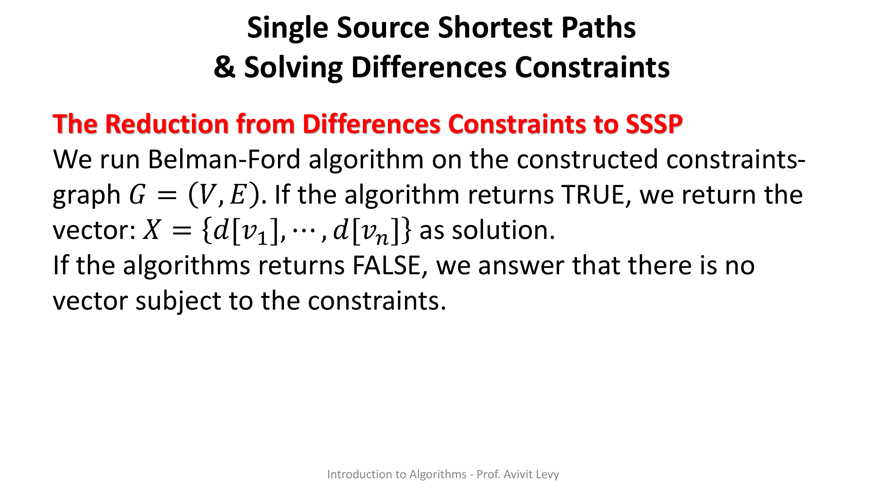
6.3 הרצה ופתרון
מריצים את Bellman-Ford על גרף האילוצים ממקור v₀. אם הוחזר TRUE — מחזירים את הווקטור X = (d[v₁], … , d[vₙ]) כפתרון. אם הוחזר False (יש מעגל שלילי) — אין וקטור המקיים את האילוצים.
6.4 נכונות הרדוקציה
מראים שכל אילוץ מתקיים בפתרון X. יהי xⱼ − xᵢ ≤ bₖ אילוץ ב-C. אז xⱼ = d[vⱼ] ו-xᵢ = d[vᵢ], ומתקבלת שרשרת אי-השוויונים:
δ(s, vⱼ) ≤ δ(s, vᵢ) + w(vᵢ, vⱼ) [by shortest-paths weight definition] δ(s, vⱼ) − δ(s, vᵢ) ≤ w(vᵢ, vⱼ) d[vⱼ] − d[vᵢ] ≤ w(vᵢ, vⱼ) [by Bellman-Ford's correctness] xⱼ − xᵢ ≤ bₖ [by solution construction]
כלומר הפתרון X מקיים את האילוץ. אי-השוויון הראשון הוא בדיוק תכונת "אי-שוויון המשולש" של מרחקים קצרים: δ(s, vⱼ) ≤ δ(s, vᵢ) + w(vᵢ, vⱼ).
6.5 עלות הרדוקציה
Bellman-Ford עולה Θ(|V| · |E|). בגרף האילוצים יש n+1 קדקודים (v₀,…,vₙ) ו-m+n קשתות (m קשתות-אילוץ ועוד n קשתות מ-v₀), ולכן העלות הכוללת היא Θ((n+1)·(m+n)). עלות בניית הגרף עצמו נמוכה מזה.
מקור: shortest-paths-bellman-ford.pdf (עמ' 17–23)
7. תרגיל כיתה — אילוצי הפרשים (הרצה מלאה)
7.1 המערכת הנתונה
X₁ − X₂ ≤ −5 X₃ − X₄ ≤ 18 X₃ − X₂ ≥ 2 X₁ − X₃ ≤ −10 2X₅ − 2X₆ ≤ 14 X₆ − X₁ ≤ 1 X₃ − X₅ = 9
7.2 שלב א' — סידור לצורה התקנית Xᵢ − Xⱼ ≤ b
שלושה אילוצים דורשים טרנספורמציה לפני שאפשר לתרגם אותם לקשתות:
- X₃ − X₂ ≥ 2 ⟶(כפל ב-−1)⟶ X₂ − X₃ ≤ −2
- 2X₅ − 2X₆ ≤ 14 ⟶(חלוקה ב-2)⟶ X₅ − X₆ ≤ 7
- X₃ − X₅ = 9 ⟶(שוויון = שני אילוצים)⟶ X₃ − X₅ ≤ 9 וגם X₅ − X₃ ≤ −9
המערכת לאחר הסידור — 8 אילוצים:
X₁ − X₂ ≤ −5 X₃ − X₄ ≤ 18 X₂ − X₃ ≤ −2 X₁ − X₃ ≤ −10 X₅ − X₆ ≤ 7 X₆ − X₁ ≤ 1 X₃ − X₅ ≤ 9 X₅ − X₃ ≤ −9
7.3 צורת מטריצה A·x ≤ b (8×6)
[ 1 -1 0 0 0 0 ] [x₁] [ -5 ] [ 0 0 1 -1 0 0 ] [x₂] [ 18 ] [ 0 1 -1 0 0 0 ] [x₃] [ -2 ] [ 1 0 -1 0 0 0 ] · [x₄] ≤ [-10 ] [ 0 0 0 0 1 -1 ] [x₅] [ 7 ] [-1 0 0 0 0 1 ] [x₆] [ 1 ] [ 0 0 1 0 -1 0 ] [ 9 ] [ 0 0 -1 0 1 0 ] [ -9 ]
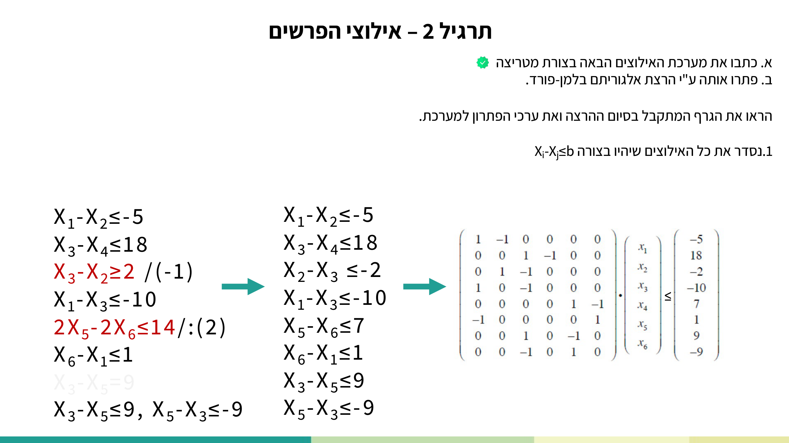
7.4 שלב ב' — גרף האילוצים והרצת Bellman-Ford
בונים גרף עם קדקודים V0, V1, …, V6 (כאשר V0 הוא המקור המלאכותי המחובר במשקל 0 לכל השאר), וקשת במשקל b לכל אילוץ Xⱼ − Xᵢ ≤ b. נעקוב אחר טבלת d לאורך ההרצה (עמודת π נשארת NIL בכל השלבים — המרצה עוקבת רק אחרי d):
| שלב | V0 | V1 | V2 | V3 | V4 | V5 | V6 |
|---|---|---|---|---|---|---|---|
| Initialize | 0 | ∞ | ∞ | ∞ | ∞ | ∞ | ∞ |
| i = 1 | 0 | 0 | 0 | 0 | 0 | 0 | 0 |
| i = 2 | 0 | −10 | −2 | 0 | 0 | 0 | 0 |
| i = 5 | 0 | −10 | −2 | 0 | 0 | −9 | −9 |
בסבב i=1 כל הקדקודים מקבלים 0 דרך קשתות המקור מ-V0; ואז קשתות האילוצים "מושכות" את הערכים כלפי מטה עד להתייצבות.
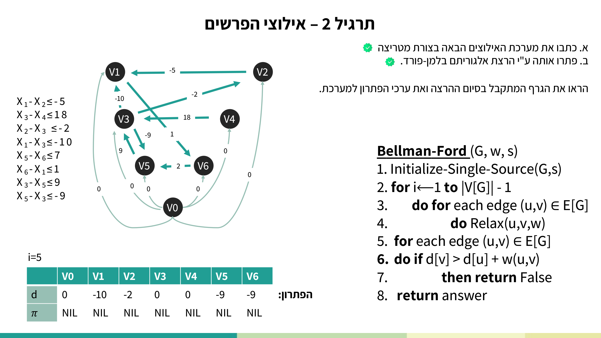
מקור: lec-bellman-ford-difference-constraints.pdf (עמ' 18–26)
8. תרגיל כיתה — ארביטראז' מטבעות (עוד רדוקציה)
זוהי בעיית ארביטראז': סדרת החלפות מעגלית שמגדילה את הכסף. דוגמת שערי החליפין מהשקף:
| ILS | USD | EUR | |
|---|---|---|---|
| ILS | 1 | 0.4 | 0.2 |
| USD | 4 | 1 | 0.8 |
| EUR | 5 | 1.3 | 1 |
שתי סדרות החלפה לדוגמה (המכפלה > 1 = רווח):
- ILS → EUR → USD → ILS: 1 · 0.2 · 1.3 · 4 = 1.04
- ILS → USD → ILS: 1 · 0.4 · 4 = 1.6
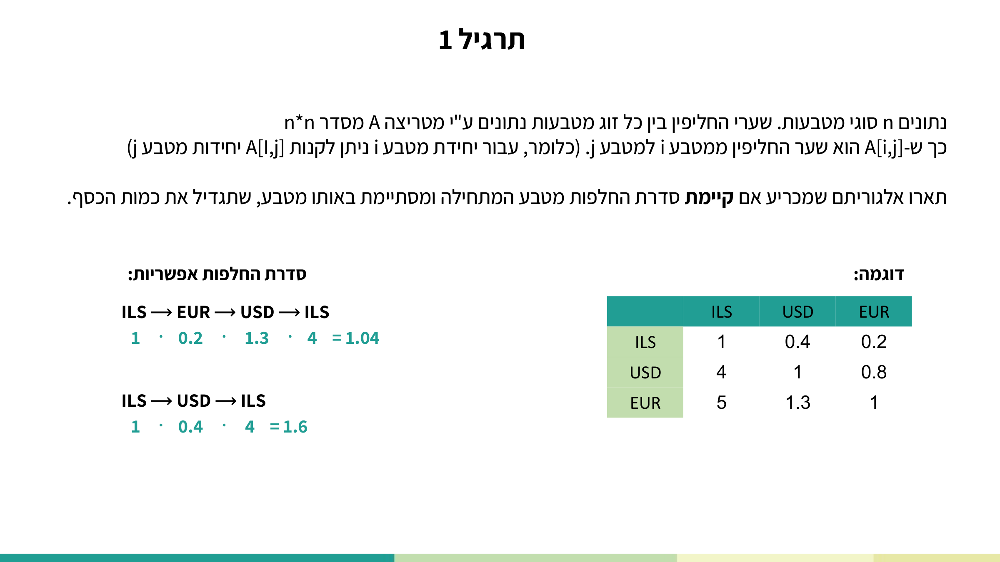
8.1 הרעיון — רדוקציה למעגל שלילי
סדרת ההחלפות היא מעגלית, ולכן נשתמש ב-Bellman-Ford שמתייחס למעגלים שליליים. נבנה גרף שבו כל קדקוד = מטבע וכל קשת = שער חליפין. אבל יש מכשול ברדוקציה: פעולות ההמרה הן פעולות כפל, ואילו במסלול של Bellman-Ford מצטבר סכום. שני צעדי המרה גושרים את הפער:
צעד א' — מכפל לחיבור, על-ידי לוגריתם: משתמשים בזהות log(A·B) = log A + log B. אם המכפלה גדולה מ-1, אזי סכום הלוגים גדול מ-log 1 = 0.
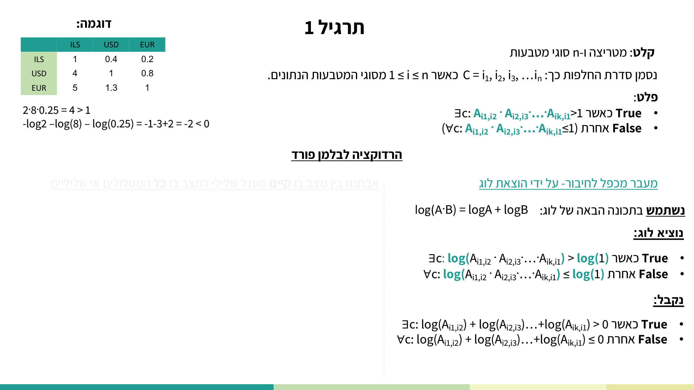
צעד ב' — מסכום חיובי למעגל שלילי, על-ידי כפל ב-(−1): לוקחים משקל −log(A[i,j]) לכל קשת. עכשיו "מכפלה > 1" (רווח) הופכת ל"סכום משקלים < 0", כלומר מעגל שלילי — בדיוק מה ש-Bellman-Ford מזהה. (המרצה: הוכחנו בתרגול הקודם שכפל שומר על היחס בין המסלולים.)
8.2 פסאודו-קוד הפתרון
Find_max_profit(A, coins)
1. V ← {vᵢ | for coin i ∈ coins}
2. E ← (V × V)
3. for (u,v) ∈ E
4. do w(u,v) ← -log(A[index[u], [index[v]])
5. G ← (V,E)
6. bf_answer ← Bellman-Ford(G, w, V[0])
7. if bf_answer = True
8. return False
9. return True
שימו לב להיפוך הלוגי בשורות 7–9: Bellman-Ford מחזיר True כשאין מעגל שלילי → אז אין ארביטראז' → מחזירים False. אם Bellman-Ford מחזיר False (יש מעגל שלילי) → יש ארביטראז' → מחזירים True. עלות: O(V³) (הגרף מלא, ולכן |E|=Θ(V²) ו-|V|·|E| = Θ(V³)).
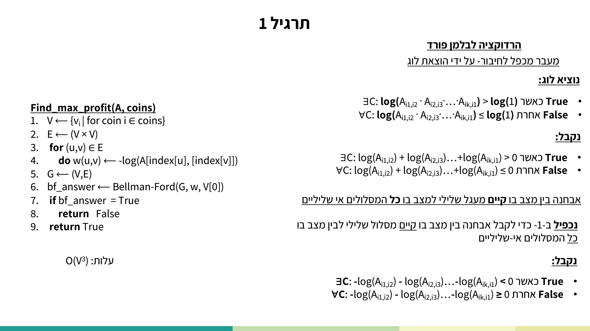
מקור: lec-bellman-ford-difference-constraints.pdf (עמ' 5–17)
9. תרגילי הקורס — תרגיל הבית
שימו לב: תרגיל הבית הזה קריטי למבחן — המבחן כולל שאלה מתרגילי הבית, ובוחן האמצע כולו על תרגילי הבית (חובה, אין מועד ב'). קבצי המקור: שאלת התרגיל (hw-bellman-ford.pdf) · הפתרון המלא (sol-hw-bellman-ford.pdf).
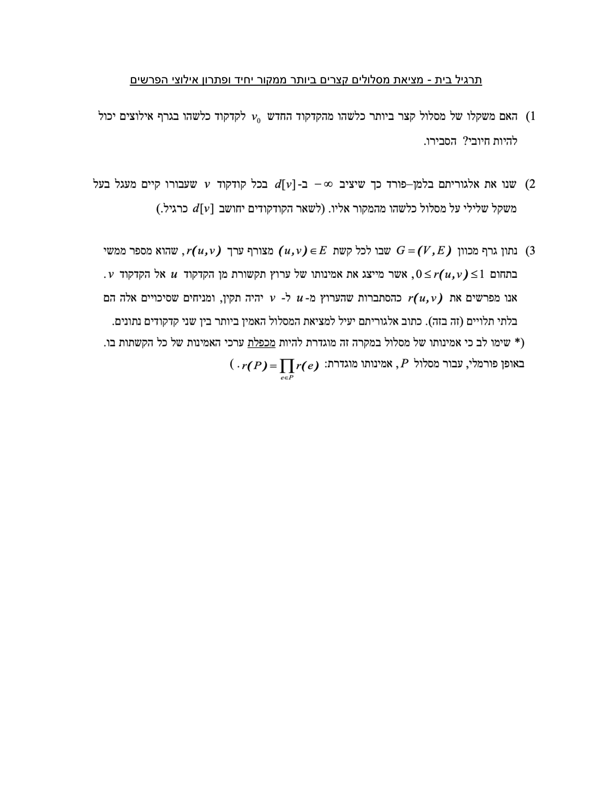
שאלה 1 — האם מסלול מ-v₀ יכול להיות חיובי?
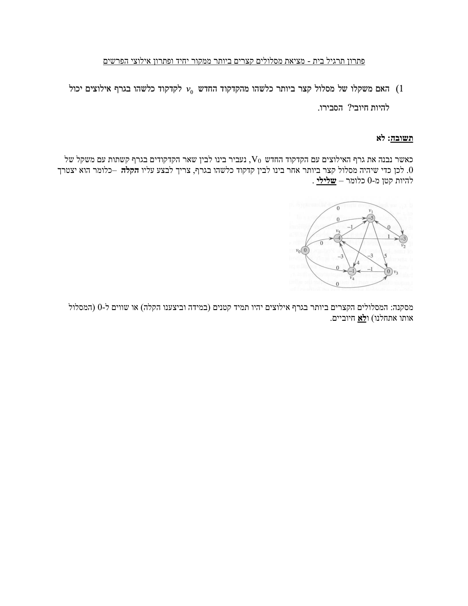
פתרון רשמי (מילה במילה מהמקור):
תשובה: לא.
כאשר נבנה את גרף האילוצים עם הקדקוד החדש V₀, נעביר בינו לבין שאר הקדקודים בגרף קשתות עם משקל של 0. לכן כדי שיהיה מסלול קצר ביותר אחר בינו לבין קדקוד כלשהו בגרף, צריך לבצע עליו הקלה — כלומר הוא יצטרך להיות קטן מ-0, כלומר שלילי.
מסקנה: המסלולים הקצרים ביותר בגרף אילוצים יהיו תמיד קטנים (במידה וביצענו הקלה) או שווים ל-0 (המסלול אותו אתחלנו) ולא חיוביים.
הסבר מודרך: ל-v₀ יש קשת ישירה במשקל 0 לכל קדקוד v. לכן מיד באתחול/סבב הראשון d[v] ≤ 0. relaxation יכול רק להקטין את d[v], אף פעם לא להגדיל. לכן הערך הסופי חסום מלמעלה ב-0 — לעולם לא חיובי.
שאלה 2 — סימון −∞ בקדקודים של מעגל שלילי
פתרון רשמי (מילה במילה מהמקור):
אלגוריתם בלמן פורד מזהה מעגלים שליליים באיטרציה ה-V שלו (שורות 5-7 באלגוריתם שבחוברת הלימוד), במידה ויש קדקוד v שמרחקו מהמקור s מתעדכן באיטרציה זו (כלומר, ניתן לבצע הקלה על קשת (u,v)).
הרעיון — במקום להחזיר false נסמן את כל הקדקודים במעגל ונציב עבורם d[v] = −∞.
Initialize-Single-Source(G,s) 1. for each vertex v ∈ V[G] 2. do d[v] ← ∞ 3. π[v] ← NIL 4. color[v] ← white 5. d[s] ← 0 mark_negative_cycles() 1. for each vertex v ∈ V[G] 2. do if color[v] = black 3. d[v] ← -∞ bellman_ford_mark_negative_weight(G, w, s) 1. answer ← True 2. Initialize-Single-Source(G,s) 3. for i←1 to |V[G]| - 1 4. do for each edge (u,v) ∈ E[G] 5. do Relax(u,v,w) 6. for each edge (u,v) ∈ E[G] 7. do if d[v] > d[u] + w(u,v) // אם יש מעגל שלילי בגרף 8. then DFS-Visit(v) // נסמן את כל הקדקודים שנגישים מהמעגל 9. answer ← False 10. mark_negative_cycles() 11. return answer
עלויות: פונקציית העזר mark_negative_cycles — O(V); Initialize-Single-Source לאחר השינויים — O(V); שורות 6–9 לאחר השינוי — O(V+E); עלות כוללת: O(VE) (כמו Bellman-Ford רגיל).
הוכחת נכונות (מתומצת): Bellman-Ford מזהה מעגלים שליליים באיטרציה ה-V (שורות 6–9). DFS-Visit (מקורס "מבני נתונים") צובע בשחור את כל הקדקודים הנגישים מקדקוד v. האלגוריתם מציב −∞ רק בקדקודים שחורים — כלומר כאלה שנגישים ממעגל שלילי כלשהו. מש"ל.
שאלה 3 — המסלול האמין ביותר (Dijkstra למקסימום)
פתרון רשמי (מילה במילה מהמקור):
הרעיון: נשנה את האלגוריתם של דייקסטרה כדי שיימצא את המסלולים בעלי המשקל הגדול ביותר.
Initialize-Single-Source'(G,s)
1. for each vertex ∈ V[G]
2. do d[v] ← -∞
3. π[v] ← NIL
4. d[s] ← 1
Relax'(u,v,w)
1. if d[v] < d[u]·r(u,v)
2. then d[v] ← d[u]·r(u,v)
3. π[v] ← u
Dijkstra'(G, w, s)
1. Initialize-single-source'(G.s)
2. S ← ∅
3. Q ← V[G]
4. while Q ≠ ∅
5. do u←Extract-Max(Q)
6. S ← S ∪ {u}
7. for each vertex ∈ Adj[u]
8. do Relax'(u,v,w)
find_the_most_reliable_path(G, r, s,t)
1. d_s ← Dijkstra'(G, r, s)
2. return d_s[t]
עלות: זהה לעלות דייקסטרה — O(V²).
הוכחת נכונות (מתומצת): מסלול אמין ביותר מוגדר max(r(P)). מתקיים תת-מבנה אופטימלי: תת-מסלול של מסלול אמין ביותר הוא בעצמו אמין ביותר (הוכחת חיתוך-והדבקה). לכן δ(s,v) = δ(s,u)·r(u,v), ומהשינוי ב-Relax' מיד לאחר הפעלתה על (u,v) מתקיים d[v] ≥ d[u]·r(u,v). ההוכחה שבעת הכנסת u ל-S מתקיים d[u]=δ(s,u) זהה במבנה להוכחת Dijkstra הקלאסית. מש"ל.
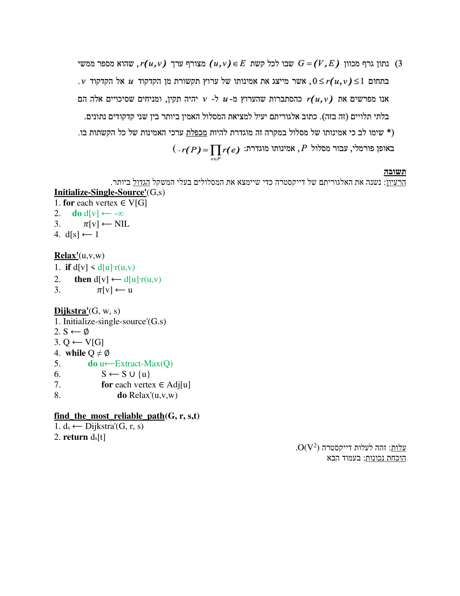
מקור: hw-bellman-ford.pdf, sol-hw-bellman-ford.pdf (עמ' 1–4)
10. בדיקה עצמית
בגרף עם |V| קדקודים, כמה סבבים (איטרציות של הלולאה החיצונית בשורה 2) מבצע Bellman-Ford לפני סבב בדיקת המעגל השלילי — ומדוע דווקא כך?
בסבב הבדיקה (שורות 5–7) עדיין נמצאה קשת (u,v) שעבורה d[v] > d[u] + w(u,v). מה המשמעות?
בבניית גרף האילוצים, בהינתן אילוץ xⱼ − xᵢ ≤ bₖ, איזו קשת מוסיפים?
בבעיית ארביטראז' המטבעות, מדוע ממירים כל שער חליפין A[i,j] למשקל −log(A[i,j])?
בגרף אילוצים עם קדקוד מקור מלאכותי v₀ המחובר לכל קדקוד בקשת במשקל 0 — האם משקל מסלול קצר ביותר מ-v₀ לקדקוד כלשהו יכול להיות חיובי?